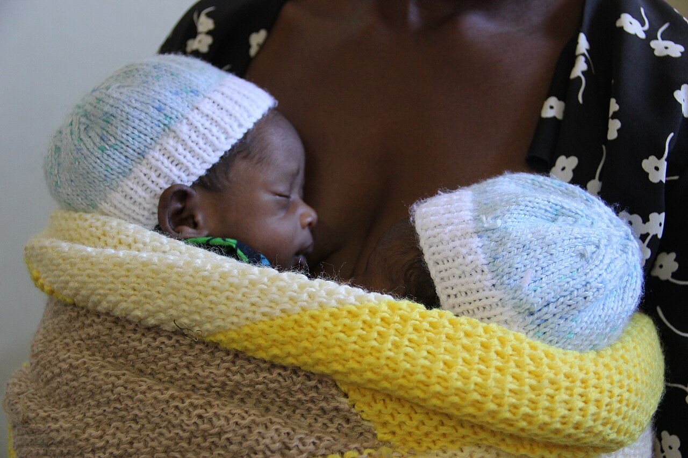
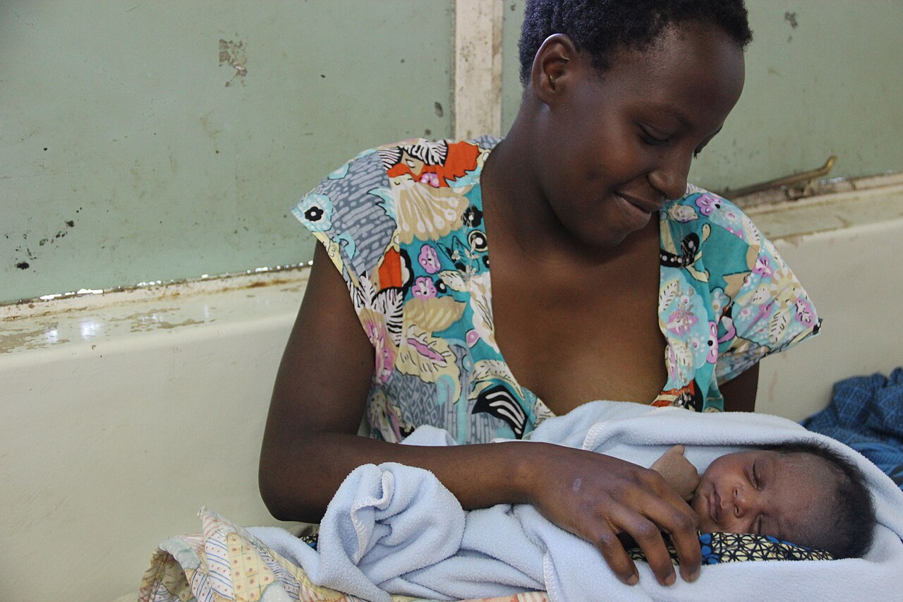
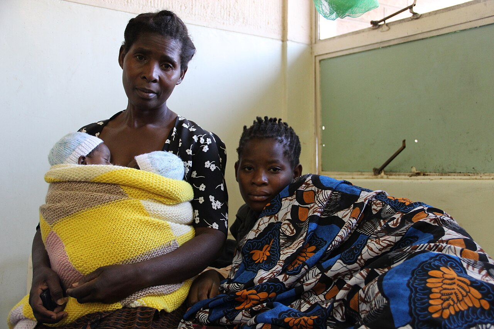
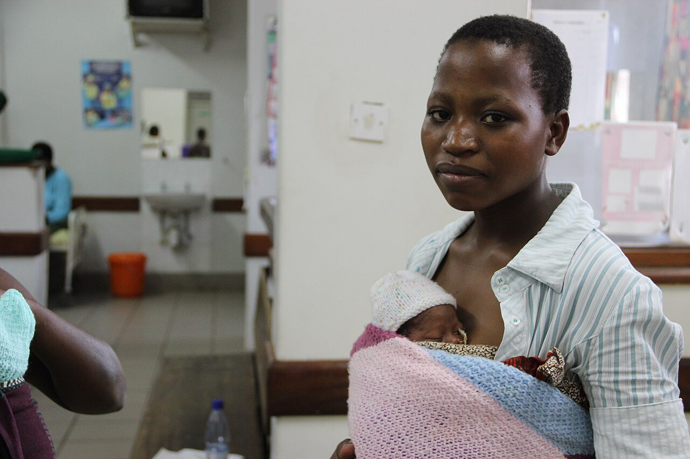
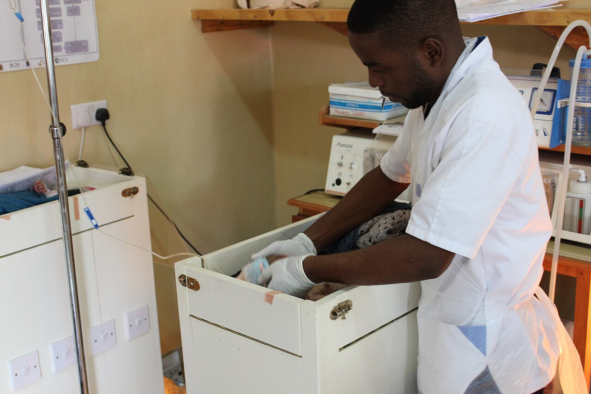
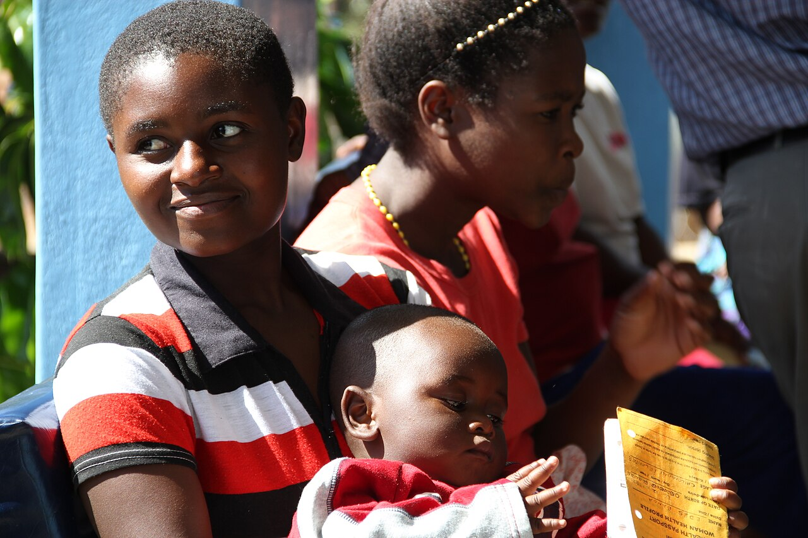
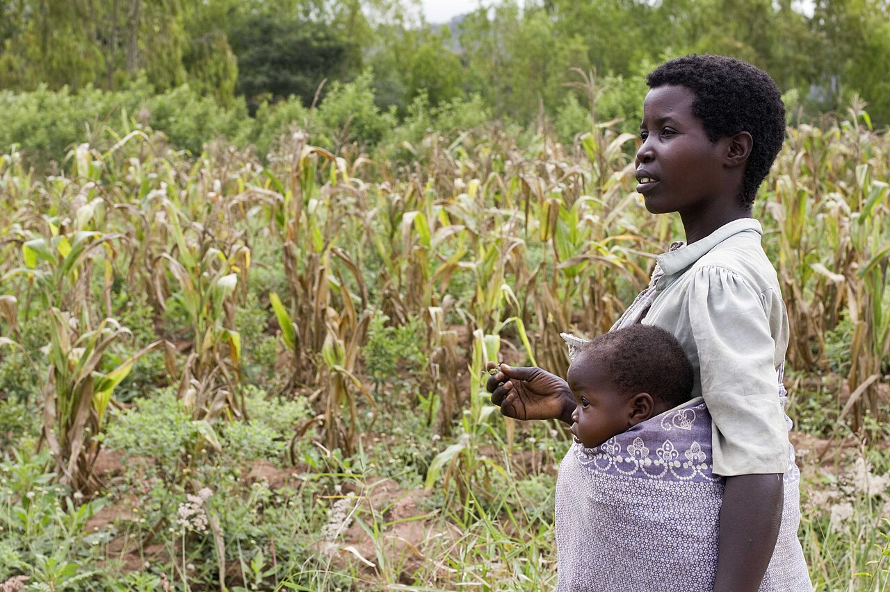

Hospital-Vetted Cases
We work alongside doctors and maternity ward staff to verify cases where the mother is in a coma, critically ill, lacking mental capacity, or suffering severe postpartum complications.
Learn About Our CriteriaWings is an international UK-based charity led by women, dedicated to supporting fellow mothers in desperate need. We provide comprehensive, 100% free care for newborns (0–3 months) whose mothers cannot care for them due to coma, severe postpartum hemorrhage, eclampsia, lack of mental capacity, or inability to produce milk in extreme poverty.

Malawi’s maternal mortality ratio remains critically above global targets due to severe PPH, eclampsia, and obstructed labor.
Neonatal mortality exceeds UN SDG 3 targets, leaving babies whose mothers are incapacitated at extreme risk.
We cover 100% of formula, private nannies, baby essentials, electricity, and clean water free of charge.
Wings partners directly with government hospitals in Malawi. Clinical staff identify vulnerable cases, and our dedicated team vets and verifies each family to ensure emergency resources reach newborns who have no other safety net.

We work alongside doctors and maternity ward staff to verify cases where the mother is in a coma, critically ill, lacking mental capacity, or suffering severe postpartum complications.
Learn About Our CriteriaWhen a mother is incapacitated or hospitalized, we assign dedicated, trained private nannies to provide full-time feeding, sterilization, and around-the-clock newborn monitoring in the home.
See How Nannies Work
Formula alone is useless without clean water and electricity to boil and sterilize bottles. We fund infant formula, clothing, essentials, and home electricity & water bills for the first 3 months.
View Complete PackageOur work is directly aligned with United Nations Sustainable Development Goal 3: Good Health and Well-being, targeting the reduction of maternal and newborn mortality in Malawi. Malawi is actively working toward halving maternal and newborn deaths and stillbirths.
Wings tackles two decisive drivers behind these high mortality rates:

Bridging hospital discharge and home survival so no infant in Malawi is lost when a mother suffers life-threatening delivery complications.
Explore Our SDG 3 ImpactEvery newborn we support is referred and verified through a government hospital. These case scenarios reflect the exact life-threatening situations Wings exists to solve.

Hospital Referral CaseAfter a catastrophic postpartum hemorrhage during an emergency C-section, baby Chisomo’s mother was placed in an induced coma in the intensive care ward. Wings stepped in immediately with free formula, a private nanny, and utility support at home.
Read Full Case Pathway
Hospital Referral CaseSevere pre-eclampsia left a young mother physically paralyzed and unable to produce breastmilk. Unable to afford commercial formula in deep poverty, hospital staff alerted Wings, who funded formula, bottles, and home utility bills.
Read Full Case Pathway
Hospital Referral CaseWhen a mother lacked the mental capacity to safely hold or feed her newborn, an aging grandmother took custody. Wings placed a trained private nanny in the home, paid for power and water, and ensured the infant thrived.
Read Full Case PathwayPartner with our UK-based team to fund infant formula, private nannies, clean water, and electricity for vetted newborns in Malawi whose mothers are incapacitated.